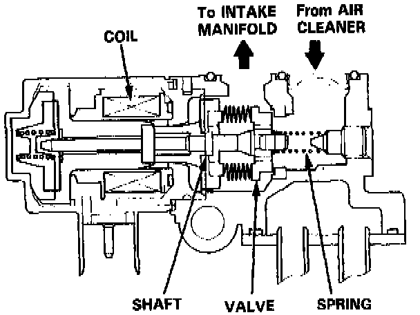
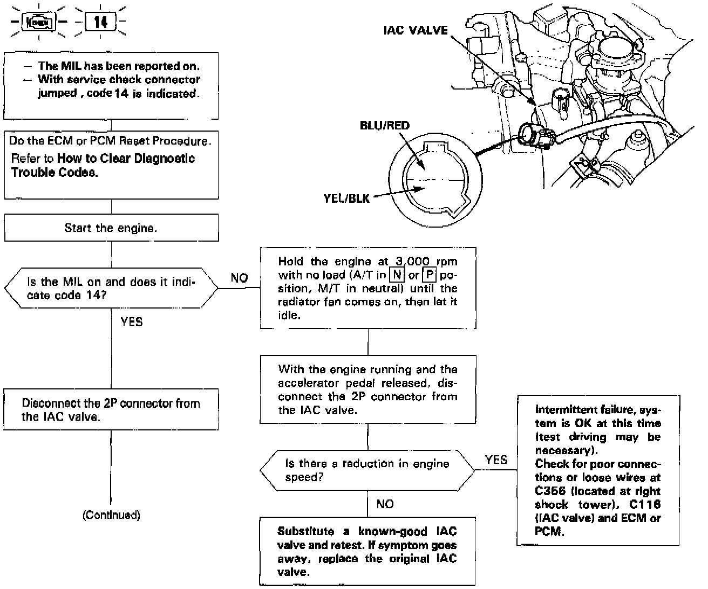
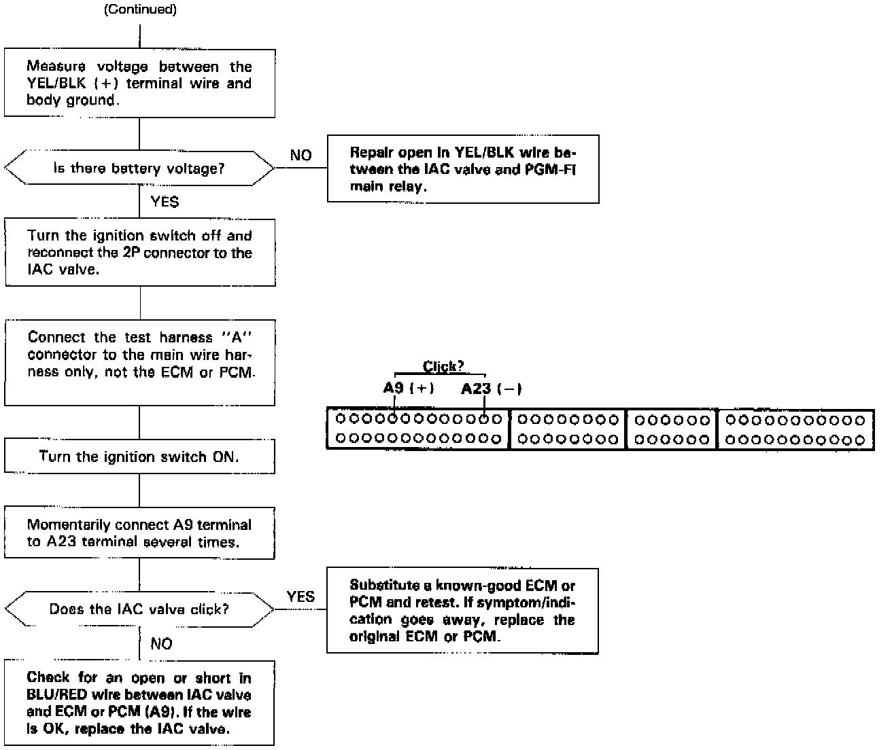

Operation CHARM
: Car repair manuals for everyone.
Home
>>
Acura
>>
1995
>>
Legend Coupe V6-3206cc 3.2L SOHC FI
>>
Repair and Diagnosis
>>
Powertrain Management
>>
Computers and Control Systems
>>
Idle Speed/Throttle Actuator - Electronic
>>
Testing and Inspection
Idle Speed/Throttle Actuator - Electronic: Testing and Inspection



The Malfunction Indicator Lamp (MIL) indicates Diagnostic Trouble Code (DTC) 14: A problem in the Idle Air Control (IAC) Valve circuit.